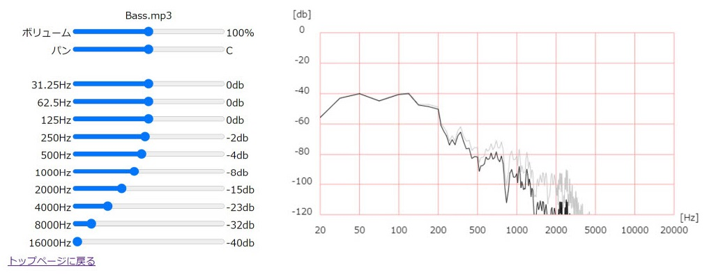

パラメーターと図
イコライザーのパラメーターには10個あり、31.25～16000Hzまでを段階的に調整できます.各周波数,-40～40dbまで1刻みで調整できます.
イコライザーの図は、縦軸が音量、横軸が周波数のグラフがリアルタイムで描画されます。
グラフの黒い線がイコライザーを通した音、灰色の線がイコライザーを通す前の音を表しています。

イコライザーの解説
イコライザーは、周波数ごとに音量を調整するエフェクターです。
ミックスダウンにおけるイコライザーの役割は、楽器の音源を各周波数帯ごとに住み分けをさせることです。
具体的な使い方は、その音源の無駄な周波数を下げることや、聞かせたい音源を邪魔しないように、他の楽器の、聞かせたい音源の芯となる周波数帯を下げることになります。
例えばここにあるボーカル、ドラム、ピアノ、ギター、ベースもそれぞれの音源が担う周波数帯があります。
ここでの説明では、31.25～250Hzまでを低音域、250Hz～2000Hzを中音域、2000～16000Hzを高音域とします。
担当する音域を大まかに分けると、低音域にベース、低音域から高音域にかけてピアノ、中音域にギター、中音域から高音域にかけてボーカル、低音域から高音域にかけてドラムです。
それぞれの音源の設定を見てみましょう。
デモ曲はボーカルを一番聞かせたい音源とします。この音源の芯となる周波数は大体500～2000Hzです。
ボーカルは、ベースとドラムを邪魔しないように低音域を下げています。
ドラムは、ボーカルを邪魔しないように500～2000Hzを下げています。
ピアノは、ボーカルを邪魔しないように500～2000Hzを下げています。低音域はピアノも担当しますが、今回の楽曲では低音は余り使わないのでベースとドラムを邪魔しないように下げます。
ギターは、ベースとドラムを邪魔しないように低音域と、ボーカルを邪魔しないように500～2000Hzを下げています。
ベースは低音域を担う音源なので、中音域、高音域を下げています。
どのような変化があるのかを確かめてみましょう。
「Bypass」のボタンを押してイコライザーの効果をオフにしてみましょう。
その状態で再生してみると、音源同士がぶつかりあって聞きにくくなります。
このようなぶつかりあった状態をイコライザーで分けてあげることで、それぞれの楽器がしっかり聞こえるようになります。
トップページに戻る